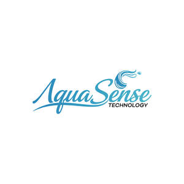

Trade Mark Journal No.2025/051 19 December 2025
UK00004303687 1 December 2025 (9,11,42)

- Class 9
- Sensors; Sensor controllers; Sensor switches; Shutter sensors; Infrared sensors; Touchscreen sensors; Temperature sensors; Motion sensors; Digital sensors; Electronic sensors; Pressure sensors; Proximity sensors; Electrical sensors; Level sensors; Heat sensors; Electric sensors; Sensors for determining temperature; Fluid level sensors; Motion recognizing sensors; Sensors, detectors and monitoring instruments; Liquid level sensors; Ultrasonic sensors; Thermostat controllers; Temperature controllers; Controller circuit boards; Electronic controllers; Controllers and regulators; Thermostat control apparatus; Temperature control apparatus [electric switches]; Temperature control apparatus [thermostats]; Valves (Remote controls for automatically operating -); Remote temperature sensors; Remote control receivers; Remote control apparatus (Electronic -); Electronic control circuits; Control apparatus (Electronic -); Electronic control systems; Electronic circuits; Electronic control units; Remote controls for controlling electronic products; Electrical controllers; Electric and electronic components; Electronic circuit cards; Electronic circuit board; Integrated electronic circuits; Electronic integrated circuits; Electrical and electronic components; Flow gauges; Control circuits; Electric control valves; Control valves (Electric -); Flow meters; Mass flow sensors; Pressure controls; Electrical control apparatus; Flow measuring apparatus; Instruments for temperature control; Temperature controlling apparatus; Temperature switches; Water temperature gauges; Temperature indicators; Thermal controls [thermostats]; Water temperature regulators; Electric control devices for heating management; Temperature logging apparatus; Temperature matrix regulators; Thermal controls; Temperature feedback units; Temperature display units; Temperature indicating apparatus; Temperature monitors for household use; Pressure indicator plugs for valves; Valves (Electronic controls for automatically operating -); Electronic components used in apparatus; Electronic components; Electronic metering devices for faucets; Circulators [electric or electronic components]; Electronic pressure sensors; Valves (Solenoid -) [electromagnetic switches]; Electronic control apparatus; Control modules (Electric or electronic -); Valve operators [electric controls]; Time control switches; Thermostatically controlled valves; Electrical power control apparatus; Electric flow meters; Electric thermostats; Application software for smart phones; Downloadable application software for smart phones; Downloadable smart phone application software; Downloadable smart phone applications (software); Smart meters; Smart home software; Downloadable mobile applications for use with wearable computer devices; Application software for mobile devices; Smart house software; Application software for wireless devices; Electronic device software drivers that allow computer hardware and electronic devices to communicate with each other; Software applications for use with mobile devices; Software applications for mobile devices; Software and applications for mobile devices; Computer software for use on handheld mobile digital electronic devices and other consumer electronics; Computer software for mobile phones; Application software for mobile phones; Software for mobile phones; Wireless controllers to remotely monitor and control the function and status of other electrical, electronic, and mechanical devices or systems; Computer application software for mobile telephones; Measuring devices; Remote control transmitters; Remote control apparatus; Remote controls; Remote control units; Remote control telemetering apparatus; Electrical remote control apparatus; Remote control apparatus (Electrical -); Control devices (Automatic -); Automatic control apparatus; Touch sensitive control panels; Electrical control panels; Electric control panels; Electricity control panels; Control panels [electricity]; Programmable control apparatus; Parental control software; Boiler control apparatus; Boiler control instruments; Indicator panels; Programmable controls; Microcontrollers; Software programmable microprocessors; Microprocessor controls; Microprocessor cores; Microprocessors; Firmware for computer peripherals; Programmable controllers; Computer circuit boards; Computer firmware; Computer software for use in integrated circuit design; Electrical circuits and circuit boards; Integrated circuit boards; Firmware and device drivers; Circuit boards; Downloadable software; Downloadable computer software; Downloadable application software; Downloadable software applications; Software downloadable from the internet; Computer software applications, downloadable; Downloadable computer software applications; Programs (Computer -) [downloadable software]; Computer programs [downloadable software]; Smartphone software applications, downloadable; Software; Downloadable software in the nature of a mobile application; Downloadable computer software for the transmission of data; Downloadable software applications for mobile phones; Downloadable applications; Downloadable computer software for remote monitoring and analysis; Downloadable mobile applications; Software applications; Mobile apps; Mobile software; Mobile application software; Computer application software for mobile phones; Downloadable applications for use with mobile devices; Downloadable applications for mobile devices; Smartphone software; Downloadable mobile applications for the transmission of data; Firmware; System and system support software, and firmware; Interface software; Software drivers; Software for smartphones; System software; Electronic display interfaces; Connectors for electronic circuits; Integrated circuit modules; Electronic relays; Heat regulators; Water level gauges; Liquid level meters; Liquid level monitoring apparatus; Water level detection apparatus; Water level indicators; Indicators (Water level -); Level indicators; Measuring sensors; Liquid level switches; Fluid flow meters; Liquid crystal protective sheets for smart phones; Intelligent Character Recognition [ICR] software; Wearable portable media players; Battery chargers for mobile phones; Touch sensitive electronic screens; Computer game software for use on mobile devices; Devices for hands-free use of mobile phones; Mobile phones; Protective films adapted for mobile phone screens; Wireless remote controls for portable electronic devices and computers; Wearable computers; Wireless portable printers for use with laptops and mobile devices; Portable navigation devices; Carriers adapted for mobile phones; Anti-theft alarms not for vehicles; Braille mobile phones; Mobile device management software; Computer software for cellular phones; Computer game software for use on mobile and cellular phones; Computer hardware modules for use in electronic devices using the Internet of Things [IoT]; Computer software for mobile applications that enable interaction and interface between vehicles and mobile devices; Computer application software for use with wearable computer devices; Intelligent motor control devices; LED displays; Led displays; LED display panels; LED screen displays; Light emitting diode [LED] displays.
- Class 11
- Taps for the control of water flow; Water control valves; Level control valves; Taps for regulating water flow; Water control valves for faucets; Temperature control valves [parts of water supply installations]; Valves (temperature sensitive controls for automatically operating -) [parts of heating installations]; Mixer taps for the manual regulating of water temperature; Taps for the control of waterflow; Thermostatic valves; Safety valves for water apparatus; Valves [plumbing fittings]; Mixing valves [faucets]; Safety valves for water pipes; Stop valves for regulating water; Stop valves being safety apparatus for water apparatus; Float valves [ball cocks]; Mechanisms for controlling fluid level in tanks [valves]; Water control valves [level controlling] in cisterns; Level controlling valves in tanks; Valves (Level controlling -) in tanks; Level controlling valves for tanks; Regulating valves [level controlling in tanks]; Valves (Level controlling -) being parts for sanitary installations; Pressure controllers [regulators] for water pipes; Regulators [valves] for level controlling in tanks; Water regulating valves [regulating accessories]; Pressure relief valves [safety apparatus] for water pipes; Regulatory fittings for water pipes; Regulating fittings for water pipes; Pressure relief valves [safety apparatus] for water apparatus; Water regulating apparatus; Apparatus for controlling water supply; Tub control valves [plumbing fittings]; Nozzles (Anti-splash tap -); Water or gas apparatus and pipes (Regulating accessories for -); Water regulating valves [safety accessories]; Anti-splash tap nozzles.
- Class 42
- Programming of electronic control systems; Development of computer software for use with programmable controllers; Design of chips [integrated circuits]; Configuration of computer firmware; Computer programming and software design; Design of software for embedded devices; Computer programming; Programming (Computer -); Computer hardware and software design; Design of computer hardware and software; Design, development and programming of computer software; Design of electric circuit boards; Installation of firmware; Design and development of computer firmware; Update of computer software; Updating of software; Updating and upgrading of computer software; Updating of computer software; Software (Updating of computer -); Configuration of computer software; Development of computer hardware and software; Configuring computer hardware using software; Design and development of computer hardware and software; Updating and maintenance of computer software; Installation, maintenance and updating of computer software; Maintenance and updating of computer software; Configuration of computer networks using software; Design of driver software; Development of driver software; Developing and updating computer software; Designing of electronic systems; Engineering design; Design of prototypes; Design of software; Software design; Technical design; Design of products; Engineering; Engineering design services; Testing of apparatus in the field of electrical engineering; Industrial design; Computer-aided industrial design; Design of industrial products; Design and development of industrial products; Industrial engineering design services; Design and development of engineering products; Design of engineering products; Development of industrial products; Product development; Product design and development; Product research and development; Product development consultation; Design and testing for new product development; Development (Research and -) of products; Analysis and evaluation of product development; Design and development of consumer products; Development of consumer products; Design and development of new products; Development of new products; Software development services; Design and testing of new products; Software development; Research and development of new products; Software design and development; Software design (Computer -); Smartphone software design; Design, development and implementation of software; Development of software; Development and testing of software; Development of computer software application solutions; Design and development of software in the field of mobile applications; Software creation; Evaluation of product design; Design services; Creation of control programs for electric operation control and drive modules; Computer software design; Computer software (Design of -); Design of computer software; Design and development of computer software; Computer software design and development; Design of computer database software; Customized design of computer software; Design and writing of computer software; Computer software design and updating; Design and development of computer software architecture; Unlocking of mobile phones; Designing of electrical systems.
Tyrese Anderson Dyer